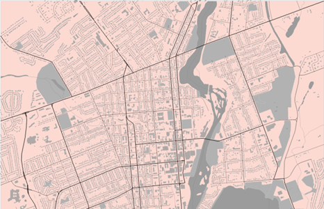
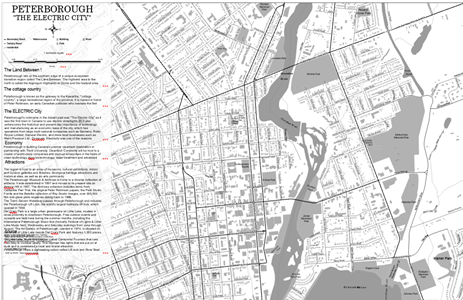
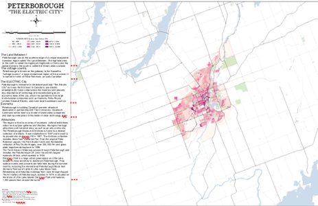
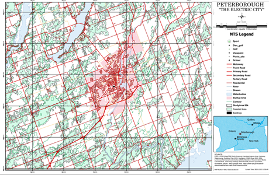
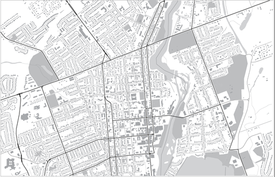
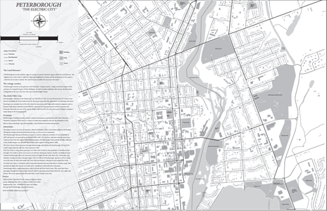
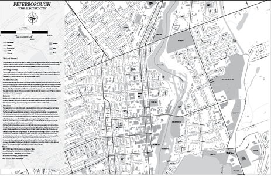
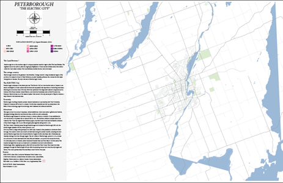

Illuminating Your World through Geovisualization and Adobe Illustrator
Overview
We are your partners in unlocking the power of geovisualization to transform complex spatial data into meaningful insights. We not only excel in geovisualization but also bring the added dimension of Adobe Illustrator expertise to elevate your visual narratives. Our consultancy firm specializes in delivering cutting-edge solutions that bring clarity, understanding, and impact to your geographic information. Transform your data into captivating stories through geovisualization. Our consultants are adept at combining the art of storytelling with the science of spatial analysis, ensuring that your message resonates with and engages your audience effectively.
Geovisualization
Our Expertise
Navigate the world of geovisualization with our seasoned experts. We specialize in translating intricate spatial data into compelling visual narratives, allowing you to gain a deeper understanding of your data. Every project is unique, and so are our solutions. Whether you're in urban planning, environmental monitoring, or market analysis, We tailor our geovisualization services to meet the specific needs and goals of your project.
Categorization Strategies
Implement effective categorization strategies to organize your data logically. Whether it's classifying land cover types, population densities, or any other variable, our experts assist in creating meaningful categories for enhanced analysis.
Grayscale Symbolization with Visual Hierarchy Techniques
Employ grayscale symbolization to convey information effectively. Our consultants use visual hierarchy techniques to prioritize important features, ensuring that your maps are both aesthetically pleasing and easy to interpret.
Integrating Map Elements
Develop proficiency in labeling and annotation techniques within ArcGIS Pro. Our consultants provide hands-on guidance on placing labels strategically, adjusting styles, and creating detailed map annotations. Our experts guide you through the process of adding legends, scale bars, north arrows, and other essential map components to enhance map readability.
Applying Color Schemes with Precision
Learn the principles of applying color schemes in relation to the type of map you are designing. Our experts guide you through the selection of color palettes while considering factors such as data type, audience, and map purpose. Our consultants provide hands-on guidance on utilizing cartographic color conventions to represent categorical data in an engaging and easily interpretable manner. Our experts guide you in applying cartographic color conventions to represent numerical data, ensuring clarity and accuracy in visual communication.
Using Large-Scale Data for Small-Scale Maps
Gain hands-on experience in utilizing data compiled at a large scale for rendering maps at a smaller scale (1:100,000). Our consultants provide practical insights into challenges and considerations present when working with different scales of geographic data.
Applying Generalization Principles
Learn the art of applying generalization principles to effectively render cartographic output at a smaller scale. Our experts guide you through the process of simplifying and refining geographic features while maintaining essential information for a clear and concise map.
ModelBuilder Workflows for Efficiency
Acquire skills in using ModelBuilder to create and store workflows in a toolbox. Our experts guide you through the process of automating generalization tasks, enhancing efficiency, and ensuring consistency in your cartographic workflows.
Adobe Illustrator Integration
Our illustrations
Seamlessly integrate Adobe Illustrator into your geovisualization toolkit. Our consultants leverage the creative capabilities of Illustrator to add a layer of design finesse, ensuring that your visualizations not only informs but also captivates your audience. Merge the analytical strength of geospatial insights with the creative storytelling capabilities of Adobe Illustrator. Our consultants guide you in crafting narratives that effectively communicate your message and make a lasting impact.
Symbolization Techniques in Adobe Illustrator
Master symbolization techniques within Adobe Illustrator using Avenza MAPublisher. Explore the variety of symbols and styles available to represent geographic features accurately and aesthetically in your maps.
Skills for Grayscale Map Creation
Develop the skills to symbolize and present data effectively, culminating in the creation of a Grayscale Map in Adobe Illustrator using Avenza MAPublisher. Our experts guide you through the process of selecting appropriate symbolization techniques to convey your spatial information in a grayscale format.
Qualitative Map Design Techniques
Dive into the world of qualitative map design using Avenza MAPublisher and ArcGIS Pro. Our experts provide insights into leveraging colour conventions for categorical data, allowing you to create visually appealing and intuitive maps. Explore advanced techniques for designing quantitative maps. Our consultants guide you in applying cartographic color conventions to represent numerical values effectively, ensuring that your maps are both accurate and visually impactful.
Seamless Integration of Map Elements
Develop advanced skills in labeling and annotation using Avenza MAPublisher. Our consultants guide you through the process of placing labels strategically, customizing styles, and leveraging annotation for detailed and clear map annotations. Our experts provide hands-on guidance on adding legends, scale bars, north arrows, and other crucial components to enhance the overall layout and readability of your maps.
